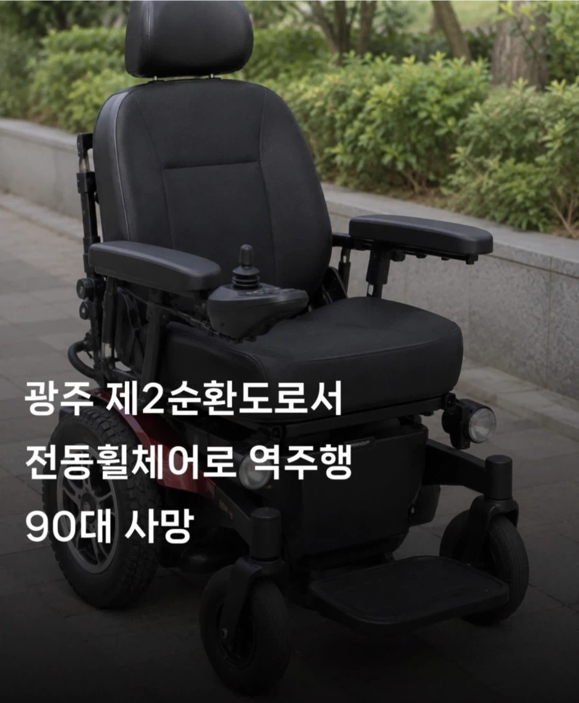

안타깝게도 순환도로에선 안 통했다네요..

안타깝게도 순환도로에선 안 통했다네요..
아 그러고 보니 나는 경부 고속도로 양재 남쪽 좀 지나서 자전거인가 본 적 있음. 갓길이긴 했는데 충격과 공포...
지하철에 미친새끼들 많음 진짜 다 뒈졌으면
자전거도로에서 레이싱하는 전동기새끼들도 죽었으면
어디 인구 2-3만따리 읍내 도로에서 타는거야 그렇다 치는데 고속화도로에서 ㅁㅊ..
Good Dyno
죽은건 안타깝지만 운전자분도 잘 해결되시길
오늘아침 지하철에 전동휠체어로 러시해와서 내 발 밟고 간 새끼 ... 피하던가 밟히던가 하는 느낌으로 쳐들어오더만
트럭운전수 ㅈㄴ불쌍하다
기름넣고 오늘은 얼마벌까 하면서 일하러 갔을탠대
아무 잘못없이 ㅈ같은 노인네 하나땜에 하루 벌 돈도 못벌고
경찰한태 조사당하고 집에가서 가족한태 오늘 사람 치여죽였어
라며 말하는 기분 얼마나 안좋을까 싶다
ㅋㅋㅋㅋㅋㅋㅋㅋㅋㅋㅋㅋ 씨발 뭔 괴짜가족이냐 ㅋㅋㅋㅋㅋㅋㅋㅋㅋㅋㅋㅋㅋㅋ
사이버펑크냐
불편한 몸뚱이로 그만 살고싶으실 수는 있는디
저건 너무 민폐아닌가
저거 노인들 중에 다리 멀쩡해도 그냥 걷기 귀찮아서 타는 사람들 많음